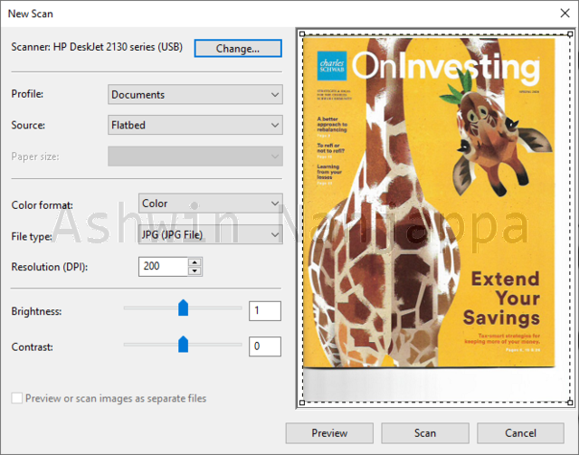

(First posted on: 2020-03-14T10:09:08.548318-07:00)
Windows Fax and Scan is an application that ships with Windows that can be used with fax machines and scanners. It first shipped with Windows Vista.

I recently wanted to scan some documents with my HP DeskJet 2130 printer-scanner-copier and tried to see how this Windows application compares to HP's own application. I found the application to be quite basic, missing the features I needed:
Can be used to scan documents and photos. These are enabled by profiles. You can add your own custom profile from customizing the settings below.
You can pick between scanning in Color, Grayscale and Black and White.
The file formats it saves to are BMP, JPG, PNG and TIF. It cannot save to PDF, which is what I mostly use when scanning documents.
There is a resolution (DPI) option to set any DPI you want. If you set arbitrary DPI values that are not supported, then the application stops you from that. So, they should probably have used a dropdown list here.
There are Brightness and Contrast settings.
Preview feature does a quick low-resolution scan and show you what is being scanned. A good feature is that you can customize the scan rectangle to scan only the portion of the document you want. It does not auto-detect the bounding box of the document though. You would need to resize the rectangle manually.
There is no support to scan multiple pages and save them to a single paginated document like a PDF file.
There is no support to rotate the scanned image or document.